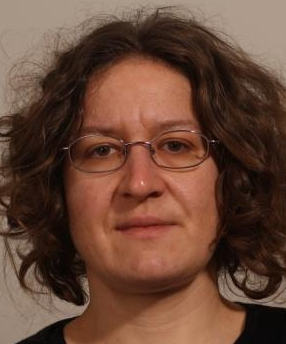

Liza Mijovic
Liza Mijovic
Welcome!
I am a particle physicist working at the Large Hadron Collider at CERN . I am employed by the University of Edinburgh
Welcome!
I am a particle physicist working at the Large Hadron Collider at CERN . I am employed by the University of Edinburgh
I work in the ATLAS collaboration . We use the ATLAS detector to record Large Hadron Collider events. By analysing these events we learn about fundamental particles and their interactions. My current research is on Higgs physics, Monte Carlo Generators, detector simulation and construction of the new tracking detector (ITk) for the future high-luminosity LHC . In the recent past I have worked on top quark physics and flavour tagging.